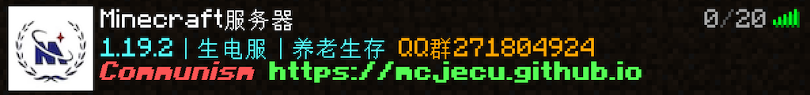
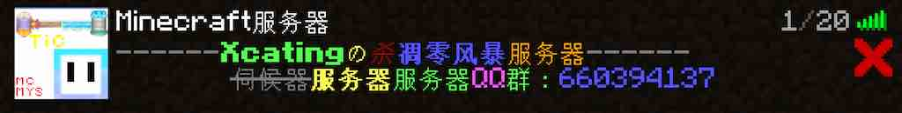
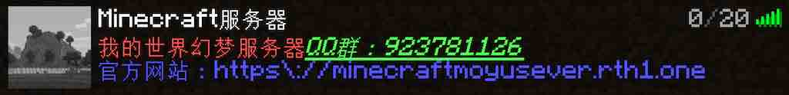

群主阁
服务器联盟 · 友情链接

|
服务器联盟
联合多个规模不大的Minecraft Java服务器,共同发展互相宣传，良性竞争，促进发展。玩家可以在一个联盟中玩到所有类型的Java版服务器,免去了玩家到处寻找服务器的困难。
联盟组织仅在玩家互通与技术交流上有联系，在社会言论、收入分配、直播和社交平台盈利没有联系。个体服务器违反法律与联盟组织无关，并由个体服务器单独承担。
我们欢迎其他服务器的加入
加入QQ群了解详情
|
共产主义联盟服务器
官网：http://pangxitong.github.io/mccu/index.html（点击进入）

摸鱼服务器
官网：https://minecraftmoyusever.rth1.one
Xcating的匠魂服务器
cn-sy-dx-1.natfrp.cloud:17887

Xcating代理的幸运方块无政府服务器
cn-zz-bgp-3.natfrp.cloud:51461
WDSJ163的生电服务器
cn-sy-muxh.f3322.net:65390

幻梦服务器
官网：http://mccu.free.tryzth.com/dream.html
域名：cn-zz-bgp-9.natfrp.cloud:56666

|

|
会旗
服务器组织会旗确立于2022年10月27日
寓意：象征和平的和平鸽双向奔赴
服务器会徽标志此服务器
底部标语表明意识形态
|
太史府史册
2022年7月16日——服务器建立运行成功；
2022年7月17日——服务器Panda Frp建立隧道：free.tryzth.com:53592；
2022年7月18日——服务器测试成功，实现两名玩家互通；
2022年7月18日——服务器第一次备份（备份整个服务端），服务器开启常态化备份进程；
2022年8月8日——服务器被正式命名为Minecraft Communism Union；
2022年8月8日——服务器安装fabric失败，并确认服务器永久使用MOJANG提供的官方服务端；
2022年8月9日——服务器更新到Minecraft Java 1.19.2；
2022年8月10日——服务器拥有了在服务器列表的图标和简介；
2022年8月17日——成立“Forge暮色森林”分服务器，单仅运行16小时；
2022年8月21日——服务器第一次开放日，第一次被熊，第一次封禁玩家，第一次回档；
2022年9月6日——服务器官网建立；
2022年9月10日——服务器第一次活动，既“中秋节特别活动”——寻找编码钻石和编码金锭活动；
2022年9月10日——服务器官网在GitHub上实开源；
2022年9月11日——创建CraftBikkit小游戏插件分服务器；
2022年9月19日——服务器组织拥有了自己的图标；
2022年9月24日——CraftBikkit服务器停服，并确认以后进运行唯一主服务器；
2022年10月6日——创立服务器联盟；
2022年10月16日——服务器列表图标和简介修改，官网设计大改、使用百度统计；
2022年10月23日——服务器成立规制堂、群主阁和太史府，官网开启多界面；
2022年10月27日——服务器组织有了自己的旗帜；服务器组织确立会歌为《破浪——共青团中央》；服务器将《中华人民共和国国歌——义勇军进行曲》和《破浪——共青团中央》做成资源包要求玩家下载；
2022年11月1日——资源包增加《国际歌》；GitHub项目接受第一个拉取请求、官网顶部菜单栏添加了大小变换动画并添加管理员mcheping520；
2022年11月7日——主服务器主域名永久停用，备用域名转为主域名，新建纯生存服务器；
2022年11月20日——主服务器仅在周末运行，生存服务器全天运行；官网新增首页；
2022年11月26日——生存服升级为fabric并安装幸运方块；
2022年11月29日21时28分——fabric服迁移给Xcating；
2023年1月25日——服务器停服；
2023年1月28日——服务器开启了2.0时代；
2023年2月5日——服务器被熊，服务器于当晚关闭，2月10日回档2月4日的备份;
2023年4月16日——服务器进入3.0时代，完全重置存档，开始共产主义改革；
2023年6月6日——服务器使用geyser模组开启了对基岩版玩家服务的提供。
2023年7月某日——服务器停服
2026年7月16日——服务器重新开服
2026年7月23日——服务器官网重构
鸣谢府名录
一、篇章简介
（一）篇章目的
感谢各大平台对此服务器及官网的技术支持与合作，在此列出列表这些好心的企业或组织以表感谢，并且帮助其他我的世界服务器参考建设自己的组织。
（二）免责声明
此篇章不属于广告，只是表达谢意与提供帮助。
二、下载帮助
（一）Minecraft
Minecraft官网（点击进入）
Minecraft官网下载（点击进入）
此网站为Minecraft国际版官网，提供正版游戏的购买与下载。
（二）Java
Java8下载（点击进入）
Java17下载（点击进入）
此网站为Java官网，提供游戏必备驱动下载。
（三）第三方启动器
HMCL下载（点击进入）
PCL下载（点击进入）
此网站为第三方启动器网站，提供盗版游戏下载。
有条件的尽量支持正版，我们仅接受正版玩家，第三方启动器登录正版账号可以进入。
三、技术支持
（一）GitHub
服务器官网源代码开源（点击进入）
服务器资源包开源（点击进入）
技术顾问mcheping520的GitHub空间（点击进入）
GitHub对服务器组织提供了极大帮助，服务器官网开源、服务器资源包开源、服务器资源包下载和登录支持等项目都由GitHub提供。
（二）Minecraft Wiki
Minecraft Wiki（点击进入）
Minecraft Wiki对服务器的构建和服务器基础设施建造提供了巨大帮助。
（三）内网穿透
Panda Frp（点击进入）
SAKURA FRP（点击进入）
两个内网穿透软件对服务器运行数据传输提供了巨大帮助。
（四）编程学习
W3school（点击进入）
HTML（点击进入）
服务器官网由服主自行编写，服主从W3school免费学习了HTML、CSS和JavaScript编程。
（五）数据据统计
百度统计（点击进入）
百度统计承担了服务器官网的全部浏览数据统计。
（六）捐助平台
捐助平台（点击进入）
爱发电提供了服务器组织的捐助收入。
（七）模组提供
fabric（点击进入）
幸运方块（点击进入）
fabric为我们提供了服务端和客户端，幸运方块为我们提供了优质的模组。
（八）小游戏资源
天堂跑酷（点击进入）
以上平台为我们提供了优质的小游戏资源
（未完待续）